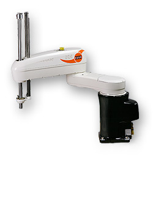
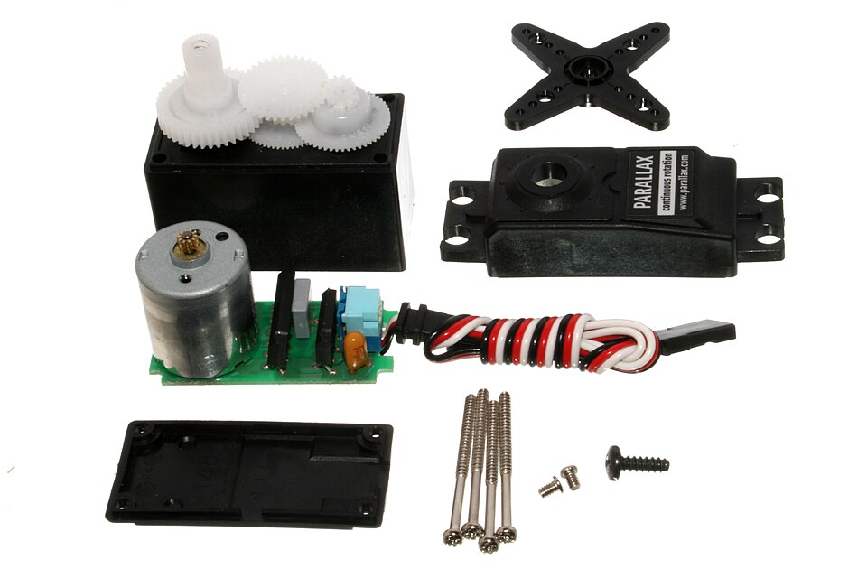

Calibrate a two-joint arm and check its reach
The same command repeatedly lands 15 mm away from the mark. Use a cardboard robot arm first so you can isolate a position error without motor settings getting in the way.
Cardboard, two pivot fasteners, ruler, protractor and graph paper. The browser exercise uses a flat two-joint arm. A real low-torque trainer is optional and stays outside the hand-measurement exercise.
Find the base, joints and tool centre point
Make a flat arm with 120 mm between the first and second pivot and 80 mm from the second pivot to the pencil tip. Mark the origin under the first pivot. Point the straight arm along +X. Mark +Y to the left of someone looking along +X from the origin, or use a printed x-y grid to remove ambiguity. Read both angles counterclockwise looking down at the page. Joint 2 is measured relative to link 1.

Photo by Jo Teichmann, scaled for the course. Original · Public domain.


Photo by oomlout, resized. Original photo · CC BY-SA 2.0.

A tool centre point is the point on the tool you care about, such as the pencil tip. Changing the tool moves that point relative to the last link. Northwestern · Forward kinematics.
Predict the output and compare it to marks
y = L₁ sin θ₁ + L₂ sin(θ₁ + θ₂)Use a degree-mode calculator or convert degrees to radians for software.
| Joint 1 | Joint 2 | Expected x | Expected y |
|---|---|---|---|
| 0° | 0° | 200 mm | 0 mm |
| 90° | 0° | 0 mm | 200 mm |
| 0° | 90° | 120 mm | 80 mm |
| 30° | −60° | 173.2 mm | 20 mm |
- Mark all four points. Set the two angles with the protractor and compare the actual pencil tip with each mark. Log signed x and y errors for each point.
- Re-approach one mark from both directions. A difference between the two approaches suggests play or flex in the mechanism.
- Shift the marked elbow zero by 10°. At commanded 0°, 0°, the altered arm should land at about (198.8, 13.9) mm. Shortening either link produces a different pattern.
Watch on YouTube · Watch how joint motions combine to define the tool pose. The planar two-link exercise applies the same idea to a simpler arm. Modern Robotics, Chapter 4: Forward Kinematics Example · Northwestern Robotics.
Report an offset and a repeatability result
The reachable distance for the ideal arm lies between |120 − 80| = 40 mm and 200 mm. Mechanical stops can shrink that range. Record three attempts at one point, the signed error at each of the four targets, the offset you introduced and the result after correcting it. Uneven repeatability and a consistent zero offset call for different checks.
T31 · Feedback, interlocks and control loops
T33 · Robot motion, coordinate frames and encoder feedback